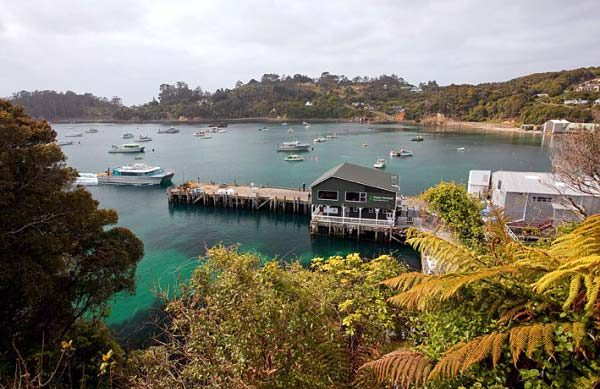
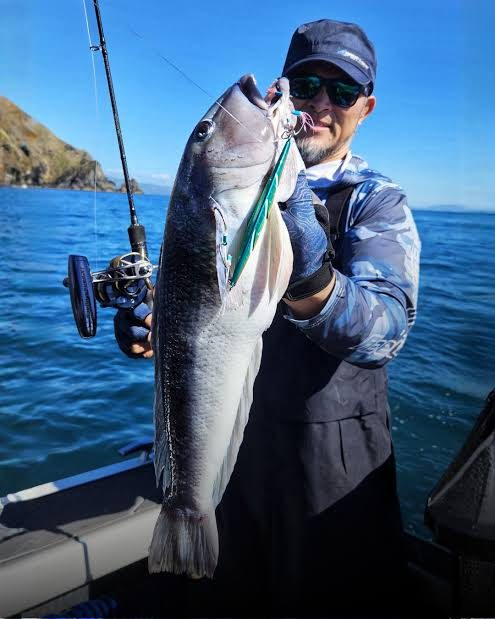

About Stewart Island
Rakiura Stewart Island is a beautiful and unspoilt destination in New Zealand. It is home to the stunning Rakiura National Park, where you can explore the diverse native species and enjoy breathtaking landscapes.

Stewart Island facts
- Population: ~400
- Area: 1,747.72 square kilometres
- Highest elevation: 980 metres
- Roads: 28 kilometres
- Walking tracks: Over 280 kilometres
General Information
Rakiura Stewart Island, known for its stunning natural landscapes and unique wildlife, is home to a small, closely-knit community. As of the latest census, the island's population is approximately 400 residents. This modest number contributes to a strong sense of community and a distinctive island culture that reflects the lifestyle of its inhabitants. The population primarily engages in activities such as fishing, tourism, and conservation efforts, which play a significant role in shaping local identity.
The lifestyle on Rakiura Stewart Island is influenced by its geographical setting. Many residents adhere to a sustainable lifestyle, highlighting their relationship with the surrounding environment. Farming, fishing, and gathering local resources are common practices, contributing to a self-sufficient community that values conservation. Recreational activities such as hiking, bird watching, and fishing are prevalent, attracting not only tourists but also allowing locals to connect with nature.

Rakiura has a diverse economy that primarily revolves around fishing, tourism, and agriculture. The island's geographical location makes it a unique fishing ground, attracting both commercial and recreational fishers. The fishing industry, especially the harvesting of blue cod, is not only a primary source of income for local families but also a significant contributor to the region's economic stability. This sector provides job opportunities and enhances the local economy through seafood sales and related services.
Tourism is another vital pillar of Stewart Island's economy. The island's stunning landscapes, unique wildlife, and outdoor activities such as hiking and birdwatching attract thousands of visitors each year. This influx of tourists provides various opportunities for local businesses, including accommodations, guided tours, and recreational activities. The local government's efforts to promote sustainable tourism have led to an increase in eco-friendly practices, further enhancing the island's appeal to environmentally conscious travelers. However, the dependence on tourism also presents challenges, particularly related to seasonality and the need for year-round employment. Businesses often experience fluctuations in demand, causing economic uncertainties during off-peak seasons.
Agriculture plays a smaller yet essential role in the island's economy, with local farms producing dairy and meat products, supplemented by aquaculture initiatives. The agricultural sector helps ensure food security for the local community and contributes to the island's self-sufficiency. Nevertheless, the development of agriculture on Stewart Island faces challenges such as land limitations and environmental concerns.
Stewart Island NZ. (2021, June 5). About Stewart Island. Stewart Island NZ. https://stewartislandnz.com/about/